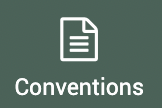
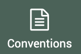
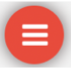
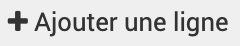
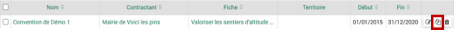
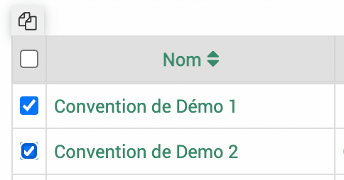

Conventions
 > 
> 
{kind=link}
Le module convention permet de regrouper les projets qui font partie d’une même convention.
Pour ajouter une convention à une fiche projet, il faut passer par cet onglet.
Pour créer une convention appuyer sur le  en bas à droite de l’écran.
{kind=link}
Le formulaire à remplir contient les champs suivants :
Nom (obligatoire)
Contractant : à choisir parmi les structures dans >
 (ne doit pas nécessairement être un financeur)
(ne doit pas nécessairement être un financeur)N°
N° arrêté
Avancement : en pourcentage
Date de début et Date de fin
Description
Date de décision, Date de notification et Date de retour signature
Montant
Montant subventionnable
Membres : parmi les profils d’utilisateurs créé dans le logiciel
Mots-clés
Territoires
{kind=link}
Une fois la convention enregistrée une première fois d’autres champs apparaissent.
Il est maintenant possible de rattacher les fiches associées dans l’onglet « Fiches ».
Les fiches ne pourront être ajoutées que par l’onglet fiche dans le module convention et non par l’onglet convention dans les fiches elles-mêmes.
Cliquer sur  pour ajouter une fiche : choisir la fiche a associée et le pourcentage de la fiche financé par la convention. Ce pourcentage sera rapporté au total des dépenses de la fiche et temps passé.
{kind=link}
Dans le tableau :
Le Montant total de la fiche correspond au montant total sollicité dans les recettes de la fiche.
La Répartition par financeur indique si d’autres financeurs sont présents sur la même fiche. Par exemple si des recettes sont rattachées à des enveloppes d’autres financeurs.
La colonne Total dans répartition financeur correspond au % de la fiche pour la convention multiplié par le « Montant total de la fiche » = total sollicité.
Le Temps passé est au pro rata du pourcentage de la convention associée à la fiche par rapport à tous les temps insérés dans la fiche
Auto-financement correspond au % de la convention rapporté au montant sollicité des postes de recette qui ont la case autofinancement cochée.
Les différentes colonnes Dépenses correspondent aux % de la fiche portée par la convention rapportée aux totaux des différentes colonnes dans les dépenses des fiches associées.
Dupliquer convention
Dans le module convention, pour dupliquer une seule convention, cliquer sur l’icône dupliquer en fin de ligne.
{kind=link}
Pour dupliquer plusieurs conventions d’un coup, il faut cocher les conventions que l’on veut dupliquer, puis cliquer sur dupliquer en haut des cases à cocher.
{kind=link}
Après la duplication la fenêtre se réactualise. Les conventions dupliquées auront le même nom avec « (copie) » à la suite. Les éléments dupliqués sont les suivants :
Nom
Contractant
N°
N° arrêté
Description
Membres
Mots clés
Territoires
Fiches rattachées
Tout sauf les dates, montant et l’avancement.